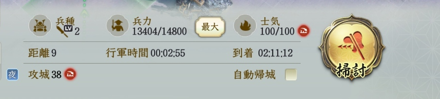
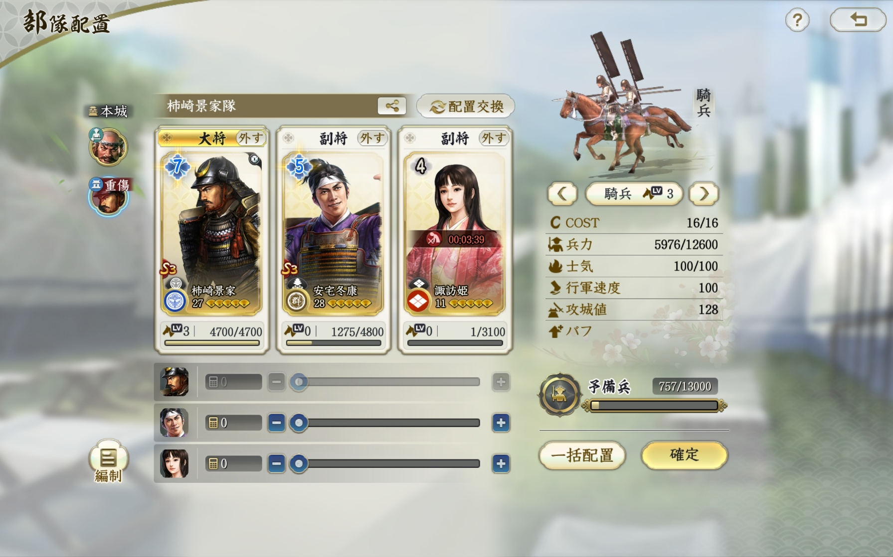

遠征・移動
夜間は足場へ掃討し、「自動帰城」をオフ
夜間の遠征で移動に時間がかかるときは、途中の足場を中継地点にします。掃討できる足場へ向かい、戦闘後もその場に留まって、次の占領へ進む方法です。
- 目的地の途中にある、掃討できる足場を選ぶ。
- 出撃画面で「自動帰城」のチェックを外す。
- 「掃討」で出撃し、終了後はその場に留める。
- 足場から目的の土地へ、次の占領を指示する。

遠征・移動
夜間の遠征で移動に時間がかかるときは、途中の足場を中継地点にします。掃討できる足場へ向かい、戦闘後もその場に留まって、次の占領へ進む方法です。

レベル上げ・兵損対策
育成したい武将に多くの兵を持たせると、兵損がかさむことがあります。まずは育成枠に兵1だけを割り当て、主力と一緒に出撃する方法がおすすめです。

戦闘・実測
2026-09-23 戦報で確認。斉射による小ダメージが入っても、対象の鉄壁(2)は残り、斉射を「鉄壁剥がし」として利用することはできません。
遠征・育成の実践メモ：2026年10月1日追記。